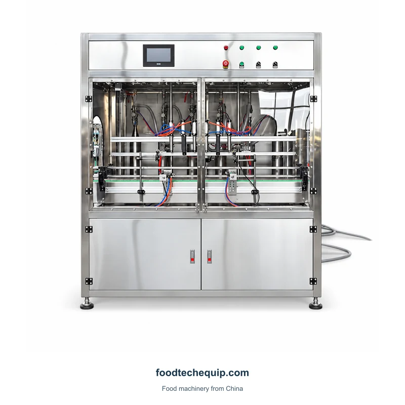

Équipements de remplissage
Remplisseuse de liquides en ligne
Configurations à 2, 4, 5, 6, 8, 10 ou 12 têtes de remplissage à pompe magnétique. Comparez le volume de remplissage et les dimensions du flacon selon la configuration.
Voir l’équipementPrécisez l’état de la matière à la température de remplissage, la dose visée et l’ouverture du récipient. Comparez les configurations à pompe et à vis pour ces conditions, puis définissez la présentation, le remplissage et le transfert des récipients.
Comparer le nombre de têtes de remplissage et le temps de cycle ↗
Configurations à 2, 4, 5, 6, 8, 10 ou 12 têtes de remplissage à pompe magnétique. Comparez le volume de remplissage et les dimensions du flacon selon la configuration.
Voir l’équipement
Ligne de remplissage et de pesage pour poudres, avec transfert de la matière, convoyeur et commandes intégrées.
Voir l’équipement
Remplisseuse de liquides en ligne avec zone de travail fermée, raccords d’alimentation du produit et commandes intégrées.
Voir l’équipement
Machine de remplissage de liquide à quatre têtes avec une configuration 500.
Voir l’équipement
Un système de remplissage de poudre à vis avec connexions de matériaux et commandes intégrées.
Voir l’équipement
Remplisseuse en ligne à pompe rotative avec convoyeur et raccords d’alimentation du produit.
Voir l’équipement
Machine de remplissage de sauce dotée d’une trémie de mélange horizontale et d’une buse de décharge.
Voir l’équipement
Remplisseuse de liquides à alimentation sous pression avec cuve surélevée, buse de remplissage et caisson à roulettes.
Voir l’équipement
Une unité de remplissage de liquide compacte à pompe en céramique avec écran tactile et buse réglable.
Voir l’équipement
Remplisseuse à pompe avec convoyeur, deux têtes réglables et tubes d’alimentation du produit.
Voir l’équipement Illustration de l’équipement
Illustration de l’équipementÉquipement de remplissage et de soudure de tubes unidoses avec bol d’alimentation et cheminement guidé.
Voir l’équipementEssayez un autre mot-clé ou effacez vos filtres.
Décrire le matériau à la température de remplissage, y compris la consistance, les particules et la quantité cible. Fournissez un échantillon pour discuter de la disposition des aliments pour votre formulation.
Inclure l’ouverture du conteneur, les dimensions hors tout et la disposition de manutention. Comparez les plages de remplissage et les données de conteneur pour la configuration de tête sélectionnée.
| Zone de sélection | Que comparer | Que fournir |
|---|---|---|
| Matériel | État au point de remplissage | Consistance, température et particules |
| Conteneur | Ouverture et enveloppe extérieure pleine | Dessin du conteneur et échantillon |
| Configuration | Disposition des têtes et quantité cible | Configuration sélectionnée et débit requis |
Le remplissage établit la quantité de produit dans son format de réception ; la fermeture est une tâche distincte. Identifiez le conteneur et la fermeture réels ou indiquez si un emballage flexible est requis, puis montrez comment les emballages remplis quittent la position de remplissage.